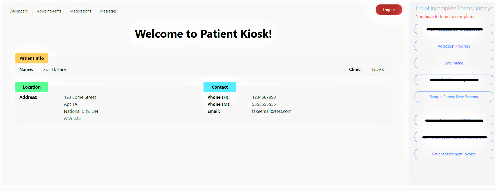
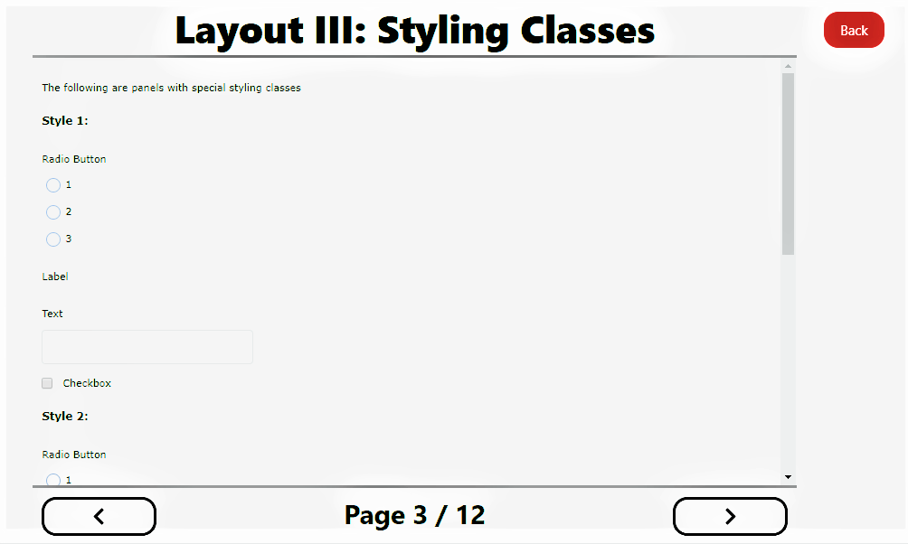
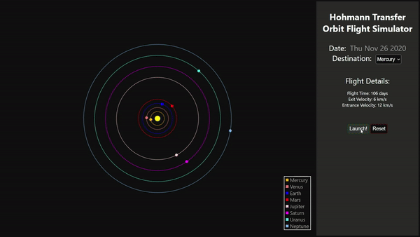
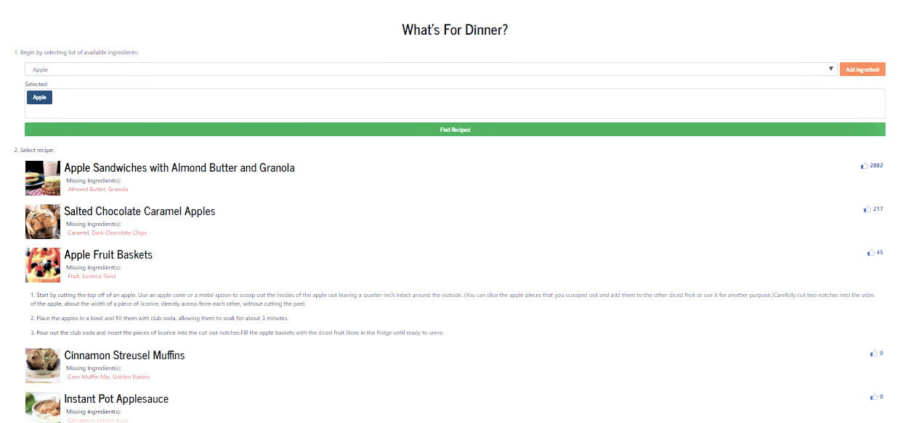

About Me
Welcome! I’m glad you are interested in me, whether you are a potential employer or justa very creepy stalker. I’m currently attending the University of Waterloo for Systems Design Engineering with an AI option. Recently completed a co-op term at Showfloor, doing front-end development on their startup event-hosting product. Previously worked as a back-end developer with LocalIntel in Calgary on a variety of different projects, and at NOVX Systems, developing the Lyte project from start to finish. I've also got some pretty out-of-this-world side projects. Check out some of my work below! I have a passion for music, sports, and bad jokes – get to know me and I’ll prove it to you!
My Skills
Frontend Development (React, Angular, HTML, CSS, TS, ...)
Backend Development (SQL, Java, C++, C#, Python, ... )
UX/UI Design
Data Science
years of coding experience
fluent languages
(if you include English, French, and Cantonese)
"Best Educational Hack" award
years of misery as a Leafs fan 😢
Work Experience
2020 - Showfloor
Worked as a front-end developer at Showfloor startup. Designed and developed key features to the platform, including the main expo page, group and private chat with exhibitors, a stage with Zoom webinar integration, an optimized booth search function, ...and much more! Worked with React and Redux to build a multi-use product for both attendees and exhibitors with cross-browser and mobile support. Check out their exceptional product here.
2019 - Lyte Project
Developed a web application for Lyte Clinic using Angular (HTML, CSS, TS). This app is to be hosted at several kiosk locations across Canada including Walmart, with the intention of expanding globally. Patient information and clinic information is securely sent and stored through RESTful APIs, with live tracking of available doctor and educator appointments. Integrated emailing service into application to allow users to complete surveys at a later date.
2019 - NOVX Patient Kiosk
Designed and implemented a user-facing patient kiosk for NOVX Systems to use with their existing EMR program. Incorporated functions for patients to view future appointments, view current medications, and designed a patient-clinic messaging system for patients to easily contact their clinic. Integrated a PDF viewer and created a survey rendering engine to allow clinics to send forms and custom surveys for patient completion.

2019 - Survey Rendering Engine
Created a survey schema for custom survey templates used by over 90 clinics across Canada. This allowed clinics to customize their surveys to better suit their needs. The render engine accepted a JSON input and would output items in HTML onto the screen, while taking into account styles and designs as specified by the survey template. Items such as radio buttons, check boxes, number boxes and others were written using Angular and dynamically inserted depending on the template.

Side Projects
2020 - Space Travel Flight Path Simulator
Designed an interactive app to calculate and simulate a flight path to any other planet in the Solar System. Created with React, this app searches for the next available launch date, from Earth to a planet of choice, according to the Hohmann Transfer Orbit. Original idea was attempted by my team for the University of Toronto Hackathon; won 2018 “Best Education Hack” award.

2020 - What's For Dinner?
Developed a quick app to allow users to select a list of ingredients. App provides users with a list of recipes based on ingredients selected and various information for an informed choice. Choosing the recipe opens up instructions for the user to follow and make a tasty meal!

2018 - Echolocation Simulator
Modelled object tracking using echolocation technique using an Arduino and 4 ultrasonic sensors. Calculated the distances based on response times and the speed of sound, and graphically mapped and displayed object-location on screen. Increased accuracy and precision through iterative testing and the use of pin-based and timer-based interrupts.